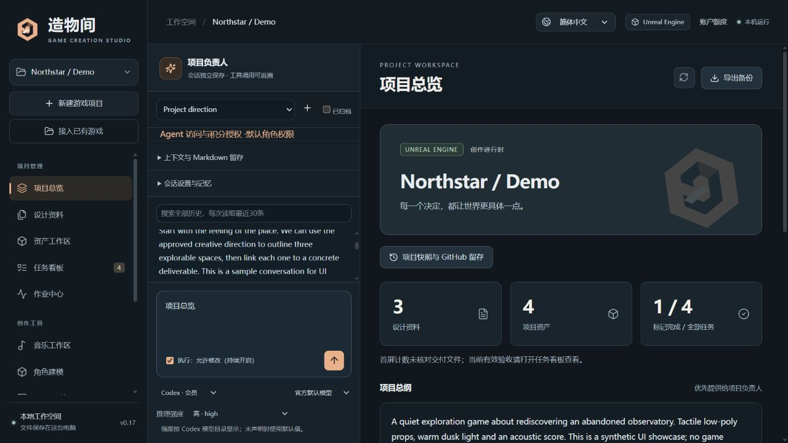

从已有工程继续
接入主工程与附加资料目录，最多 8 个来源。原位登记设计与资产，不必重新开始。
LOCAL-FIRST · CREATOR-LED
接续已有 Unreal / Unity 工程，把 AI 对话、美术、音乐、建模与项目交付，放在同一个本地工作台。
v0.19.0 预览版 · Windows x64 · 简体中文 / English

选择需要的工具，让它们围绕同一个项目工作。
A PLACE FOR THE WHOLE PROCESS
想法、讨论、产出和验收各有位置。下一次打开项目，能够接着上一次继续。
接入主工程与附加资料目录，最多 8 个来源。原位登记设计与资产，不必重新开始。
项目、音乐与建模负责人分别协作。会话历史、资料回查和 Markdown 留存，让决定能够接续。
管理绘画模型与 LoRA，准备音乐和 3D 方案。审阅产出，再把采用的版本纳入项目资产。
统一作业、任务关联、固定资产版本与验收记录。通过可校验快照和独立恢复留住进度。
START SMALL. KEEP GOING.
没有 AI 账号，也能先使用项目、设计和任务管理。
Windows 安装包自带基础 Python 环境。首次向导可创建免费的本机练习项目。
从系统窗口选择目录。按需装配支持工具，并在官方页面完成本人的账号授权。
将采用的文件关联任务，记录验收依据，保存完整工程快照，再继续下一步。
INSIDE ZAOWU
会话、项目资料与进度同屏；执行权限按会话保存，修改由你决定。
MAKE ROOM FOR YOUR NEXT GAME
当前为本机单用户实验版。外部服务、模型和引擎仍按各自规则授权与计费。
推荐 · 第一次使用
图形安装，自带 Python 和完整界面。安装后从开始菜单打开或正常停止工作台。
前往发布页在发布页查看校验文件 ↗完整解压后使用
保留完整目录，打开 ZAOWU.exe 即可。程序可以另放位置，默认用户数据独立保存。
前往发布页在发布页查看校验文件 ↗面向开发者
查看实现、修改工作台或参与开发。此包不含 Python，需要准备锁定的基础依赖。
前往发布页在发布页查看校验文件 ↗预览版安装包尚未签名。干净系统、部分真实 API、收费生成和引擎运行仍需独立验收；下载文件不包含模型权重或第三方游戏工程。
Windows 应用附件自带基础 Python 环境，核心项目管理无需另装 Python 或 Node。可选工具按需装配；源码开发环境按手册准备。
可以选择主工程与附加资料目录，合计最多 8 个来源。接入先扫描预览，原资产留在原处；选择目录不会自动运行工程。
不需要。可以先管理设计、任务与本地资产，再选择需要的服务。云端创作按供应商规则计费，自动积分消费需要单独授权。
本站提供介绍、文档和软件下载。工作台在你的电脑上运行，项目由本机管理；外部模型或创作服务按你选择的接口连接。
工作台源码采用 MIT 许可。Python、依赖、模型、引擎、服务和用户资产保留各自许可；本项目不是这些供应商的官方产品。